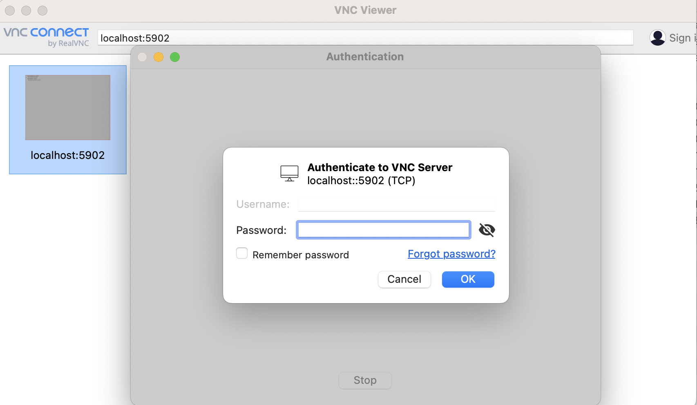
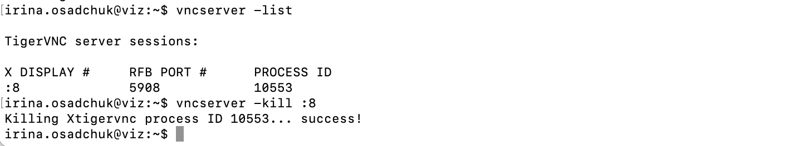

not changed to rocky yet
Remote visualization using VNC
Short guide
Connect to viz:
ssh uni-ID@viz.hpc.taltech.ee
Start VNC on viz by command:
vncserver -geometry 1265x980
Open a second connection to viz:
ssh -L 59XX:localhost:50XX uni-ID@viz.hpc.taltech.ee
where
XXis the display number that appear after givingvncservercommand.
NB!XXis always the number of two digits (e.g.01for:1)On your desktop start a vncviewer
vncviewer :XX
where
XXis the display numberStop the vncserver!!! on viz by command:
vncserver -kill :XX
Get started
Software recommended to use
Virtual Network Computing (VNC) is a graphical desktop-sharing system to remotely control another computer.
Linux: xtigervncviewer
Windows: TigerVNCviewer: vncviewer64-1.12.0.exe
Mac: VNC Viewer
First time use
On the first start, VNC asks to specify a password to connect to the server, choose a secure one, which does not match your HPC/UniID password because VNC connections are not encrypted!
VNC Long version
VNC should be run firstly at viz node of HPC and after at user’s computer.
Connect to viz by command:
ssh uni-ID@viz.hpc.taltech.ee
if this command does not work try to connect through jump host:
ssh -J uni-ID@base.hpc.taltech.ee uni-ID@viz
NB! Connection to viz can be done only with SSH keys. SSH key generation guide is here.
NB! To use viz the SSH key must be added to the base node.
On Mac and Linux this can be done by command:
ssh-copy-id Uni-ID@base.hpc.taltech.ee
After about an hour, when the automatic script has synced the files, and you can use viz.
On viz start the VNC server. Depending on which VNC client user has, one of those commands should be given:
vncserver -geometry 1265x980
and for Tiger VNC:
tigervncserver -geometry 1280x1024
It is recommended to specify window size as well by
-geometryflag, since changing the resolution of the remote desktop (= window size) at runtime can have undesired effects.The output in the terminal will show on which display VNC is running.

see second line
desktop at :8, where:8is the display number – furtherXX.Open a second connection to viz (in new terminal) and give the command:
ssh -L 59XX:localhost:50XX uni-ID@viz.hpc.taltech.ee
where
XXis the display number as two digits (e.g.01for:1)NB! If you were connected through jump host this command should be given:
ssh -J Uni-ID@base.hpc.taltech.ee -L 59XX:127.0.0.1:59XX Uni-ID@viz
On your desktop start a VNC viewer. If you do it from terminal – give one of these command depending on which VNC viewer you have:
vncviewer :XX
or
xtigervncviewer localhost:XX
where
XXis the number from above. On Windows (depending on the VNC-client) the address to connect to could belocalhost::50XX(again, theXXstands for the display/port as specified before).
If you use graphical interface - specify localhost - in the corresponding field (line in the top) and click bottom “Continue”.
Type password.

If you see monochromic field and can not start a session, it mean that you to set up your VNC session: Setting up VNC config.
If you see terminal - then everything is done correctly and you can start working. Within the session window, you can start any program from the terminal or using the menus of the window manager.
Viz has module system. Most of the modules are needed to be loaded unless the manual says they are native.
Before loading modules, the source must be specified:
source /usr/share/lmod/6.6/init/bash
module use /gpfs/mariana/modules/system
followed by two commands to load the modules. The first one loads viz-spack or viz module, depending on program installation type, and the second command loads the program itself. For example:
module load viz-spack
module load jmol

In case of native program only the command that calls this program is needed.
rasmol
or
paraview
Correct termination
In is very important to finish session correctly! Since if you do not do it - session continue to run even if you close session on your computer.
To stop VNC session give on viz one of these commands:
vncserver -kill :XX
or
tigervncserver -kill :XX
where XX is the display number.
Running sessions can be checked by command:
vncserver -list

Setting up VNC session
It is impossible to work with VNC without setting it. To do this give the following commands from home catalogue on base or viz:
cat <<EOT > .xsession
xterm &
fvwm2
EOT
This will configure automatic startup of xterm and fvwm2 window manager. Alternatively, user can use other window managers: more desktop-like – fluxbox, awesome or jwm or tiling – i3, xmonad or tritium. To do this, the corresponding line must be added to .xsession file by command:
echo "fluxbox" >> .xsession
The same way .vnc/xstartup can be configured in case user wants to apply special settings exactly to VNC visualisation.